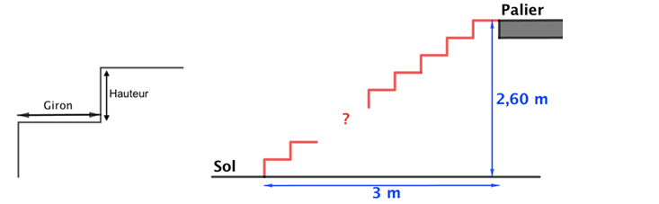
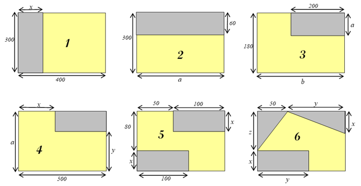
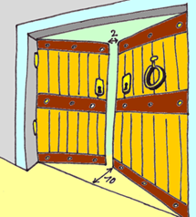
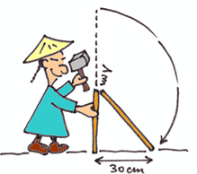

PROBLÈME 1 — Escalier et normes
Pour construire un escalier, il faut respecter certaines normes :
- Hauteur de marche : entre 17 et 21 cm
- Giron de marche : entre 21 et 27 cm
- Largeur de l’escalier : > 70 cm
- Loi de Blondel : \(2\,h + g \in [60;64]\) (en cm)

On dispose d’une longueur horizontale de 3 m et d’une hauteur de 2,60 m entre le sol et le palier.
En respectant les normes, combien de marches faut‑il prévoir ? Préciser la hauteur et le giron d’une marche.
PROBLÈME 2 — Moquettes
Voici le plan des 6 pièces d’un appartement (dimensions en cm). Dans chaque pièce, la partie jaune doit être recouverte de moquette.

- a) L’expression \(180\,b - 200\,a\) représente la surface de moquette nécessaire pour recouvrir l’une des pièces. Laquelle ?
b) Donner, pour chacune des autres pièces, une expression de la surface de moquette (en cm²) en fonction des dimensions indiquées.
- Développer et réduire si possible chacune des expressions précédentes.
- Donner les résultats en m² :
- Calculer les surfaces de moquette nécessaires aux pièces 1 et 2 pour \(x=60\) et \(a=500\).
- Même question pour la pièce 4 avec \(x=50\), \(y=100\), \(a=160\).
- Même question pour la pièce 6 avec \(x=40\), \(y=100\), \(z=90\).
-
- Trouver \(x\) pour que la surface de la pièce 1 soit \(11{,}04\,\text{m}^2\).
- Trouver \(a\) pour que la surface de la pièce 2 soit \(7{,}704\,\text{m}^2\).
- Trouver \(x\) pour que la surface de la pièce 5 soit \(1{,}17\,\text{m}^2\).
- Proposer des valeurs de \(a\) et \(b\) pour que la surface de moquette de la pièce 3 soit \(34{,}760\,\text{cm}^2\).
PROBLÈME 3 — Double‑porte
Lorsqu’on ouvre les battants d’une double‑porte jusqu’à une distance de 10 cm du seuil de la porte,
on laisse une ouverture de 2 cm.
Quelle est la largeur de la double‑porte ?

PROBLÈME 4 — Bambou brisé
Un bambou de 1 mètre de hauteur, lorsqu’il est brisé,
a son extrémité qui touche le sol à une distance de 30 cm de sa base.
À quelle hauteur a-t-il été brisé ?
